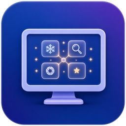
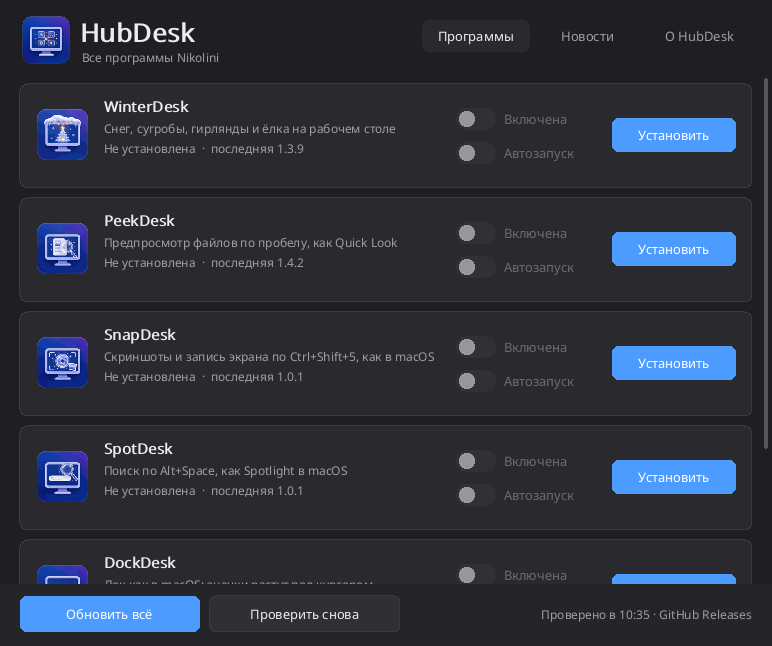
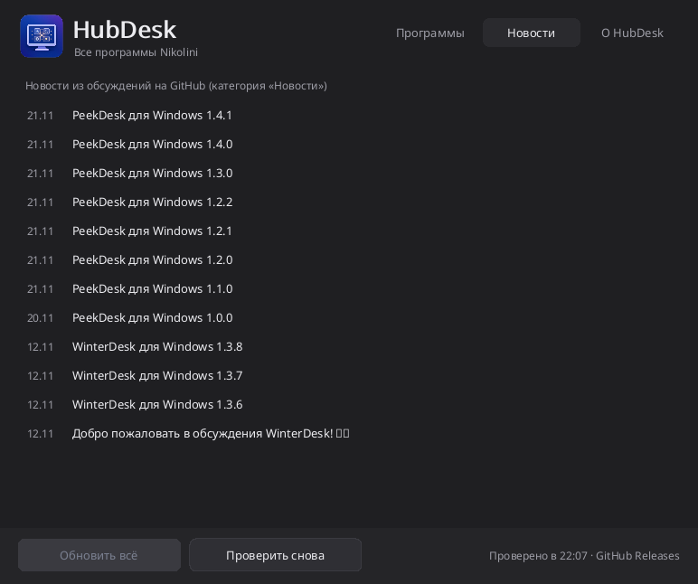
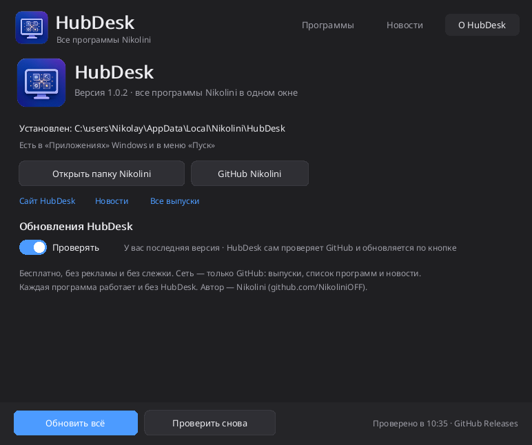

HubDesk устанавливает, включает и обновляет WinterDesk, PeekDesk, SnapDesk, DockDesk и новые программы Nikolini — галочками. Каждая программа работает и без него.
Скачать HubDesk
Бесплатно · без рекламы · без слежки · меньше мегабайта
Программа скачивается с GitHub, проверяется по SHA-256 и ставится в %LOCALAPPDATA%\Nikolini. Права администратора не нужны.
У каждой программы два переключателя: «Включена» — запустить или аккуратно закрыть, «Автозапуск» — вместе с Windows.
Установленная и последняя версия рядом. «Обновить» — одну программу, «Обновить всё» — все сразу; настройки сохраняются.
Программы видны в «Параметры → Приложения» и удаляются оттуда начисто. Настройки по желанию остаются.
Распакованные вручную программы находятся сами и управляются на месте. Перенос в папку Nikolini — только по кнопке.
Один файл. В простое ничего не делает и ничего не опрашивает; в сеть — только к GitHub, при запуске и по кнопке.
Новые появляются в HubDesk сами, как только выходят — обновлять HubDesk не нужно
Поиск по Alt+Space: приложения, файлы, калькулятор, курсы валют.
«Динамический остров»: музыка, громкость, таймеры, уведомления.
HubDesk — надстройка, а не обязательная часть: каждую программу можно скачать и запустить отдельно, а сам HubDesk можно удалить в любой момент.
Тёмное окно в стиле Windows 11


Это фильтр SmartScreen: программа новая и пока не подписана платным сертификатом. Нажмите «Подробнее», затем «Выполнить в любом случае». Скачивайте HubDesk только со страницы выпусков — рядом с каждым архивом лежит файл .sha256 с контрольной суммой.
Нет. Каждая программа Nikolini полностью самостоятельна: свои настройки, автозапуск и обновления. HubDesk просто собирает их в одном окне.
В «Параметры → Приложения» найдите программу Nikolini и нажмите «Удалить»: программа аккуратно закроется, исчезнут папка, автозапуск и записи в реестре; настройки по умолчанию остаются — HubDesk спросит. Если удалить HubDesk раньше других программ, его маленькая служебная копия останется в %LOCALAPPDATA%\Nikolini\HubDesk, чтобы остальные тоже удалялись начисто.
Нет. HubDesk обращается только к GitHub: список программ, выпуски и новости. На этом сайте нет счётчиков и аналитики.
Нет. В простое HubDesk не тратит процессор и ничего не опрашивает.
Маленькие бесплатные программы для Windows
Новости · Предложить идею · Сообщить о баге · Все обсуждения